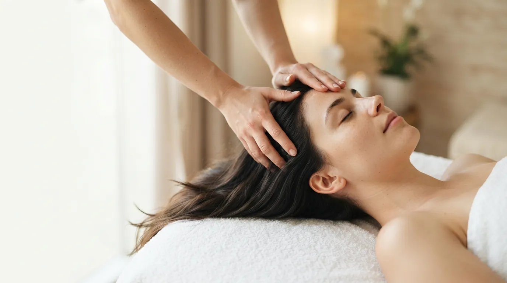

Массаж · Прага 4
Массаж головы в Праге
Тридцать минут, когда голова наконец отключается. Массаж кожи головы, висков и шеи снимает напряжение, успокаивает нервную систему и помогает избавиться от стресса.
Что такое массаж головы
Массаж головы работает с кожей головы, висками, лбом и шеей — там, где за день больше всего накапливается напряжение от концентрации, работы за компьютером и стресса.
Он сочетает круговые и разминающие движения по коже головы с мягким давлением на виски и расслаблением шеи. Кожа головы согревается, мышцы отпускают, а вслед за ними и голова. Большинство клиентов уходят с ощущением лёгкости и ясности.
Как проходит процедура
- Расслабление шеи Начинаю с шеи и плеч, где напряжение держится сильнее всего.
- Кожа головы Круговые и разминающие движения по всей коже головы, которые её согревают и расслабляют.
- Виски и лоб Мягкое давление и движения на висках и лбу, где копится усталость.
- Успокоение Медленные завершающие движения — вставать никуда не нужно спешить.
Эффект массажа головы
- глубокое расслабление и спокойствие нервной системы
- меньше стресса и лучше сон
- расслабленные шея, виски и лоб
- улучшение кровообращения кожи головы
- облегчение при напряжении от работы за компьютером
- лёгкая голова и ясные мысли
Кому подходит
Массаж головы — для всех, кто проводит дни за компьютером, носит напряжение в шее и висках или не может расслабиться вечером. Подходит и как короткая пауза посреди напряжённой недели, и как дополнение к массажу лица.
Когда массаж не проводится
- воспаления, раны или кожные заболевания на коже головы
- недавние травмы головы и шеи
- нелеченное высокое давление
- высокая температура и острые заболевания
- сильная мигрень в острой фазе
Сомневаетесь? Позвоните мне до записи по номеру +420 721 761 411, и мы всё обсудим.
Цена массажа головы
Частые вопросы
Помогает ли массаж головы при головной боли?
При головной боли от напряжения и стресса многим клиентам становится легче, потому что массаж расслабляет шею, виски и лоб. Но он не заменяет врача — если голова болит часто, обратитесь к специалисту.
Стимулирует ли массаж рост волос?
Массаж улучшает кровообращение кожи головы, что создаёт для волос благоприятную среду. Чудес при выпадении волос я не обещаю — при серьёзных проблемах лучше обратиться к дерматологу.
Можно ли после массажа сразу пойти на работу?
Да. Волосы могут быть немного взъерошены, но вы можете сразу вернуться к своим делам.
Можно ли совместить его с другим массажем?
Да, это популярное сочетание — например, с массажем лица или массажем шеи, декольте и рук. Просто укажите при записи, что хотите совместить.
Запишитесь на массаж головы
Студия находится в Праге 4 — Нусле, недалеко от Панкраца и Вышеграда. Запись онлайн займёт минуту.